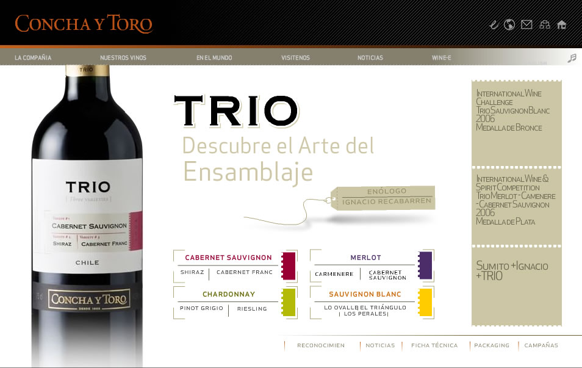
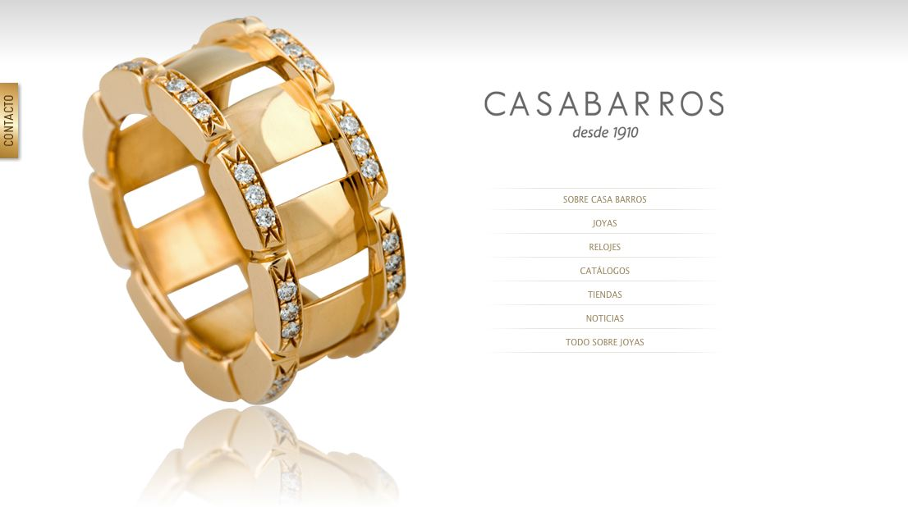

diseño productos digitales integrando investigación ux, comunicación y una base técnica que facilita su implementación.
product designer | ux/ui | ux research | front-end (html/css)
Sobre mi

Sector Vitivinícola
Diseño UX/UI y desarrollo front-end para sitio corporativo y ecosistema digital multilenguaje. Participación en rediseño completo, optimización de navegación y evolución de la plataforma en distintos ciclos.

Sector Alimentos UX/UI
Diseño y evolución de productos digitales a lo largo del tiempo, integrando UX/UI, SEO y gestión de contenidos. Trabajo iterativo enfocado en la experiencia de usuario, adaptando el producto a nuevas necesidades y tecnologías.

Sector Artículos de Lujo UX/UI
Diseño y mejora continua de sitio web, integrando UX/UI, SEO y gestión de contenidos. Trabajo enfocado en la evolución del producto digital y la coherencia de la experiencia en el tiempo.
Casos de estudio
Investigación de experiencia de usuario, Aula Digital
Investigación UX para plataforma educativa digital, con foco en accesibilidad. Se realizaron entrevistas, benchmark, user personas y journey maps para identificar necesidades y definir lineamientos de diseño y wireframes.
Investigación de arquitectura de la información, Aula Digital
Diseño y validación de arquitectura de información para mejorar navegación y encontrabilidad de contenidos. Incluyó card sorting, mapa de sitio y pruebas como tree testing.
Investigación y diseño de interfaz UX/UI, Auloria
Rediseño de interfaz para plataforma EdTech, enfocado en mejorar usabilidad y jerarquía visual. Incluyó evaluación heurística, iteración de wireframes y prototipo de alta fidelidad validado con usuarios.
Experiencia
Diseño de producto digital
Experiencia en diseño UX/UI abarcando desde la arquitectura de información hasta la interfaz final. Trabajo considerando usabilidad, estructura de contenidos y viabilidad técnica para facilitar la implementación.
Trabajo con desarrollo
Base en HTML/CSS que permite colaborar de forma fluida con equipos técnicos, asegurando que las propuestas de diseño sean consistentes y viables de implementar.
Investigación UX/UI
Aplicación de metodologías de investigación UX como entrevistas, benchmark, test de usabilidad, user personas y customer journey maps para entender a los usuarios y orientar decisiones de diseño.
Herramientas:
Figma, Adobe Suite, HTML/CSS, Bootstrap, Visual Studio Code, Google Analytics.